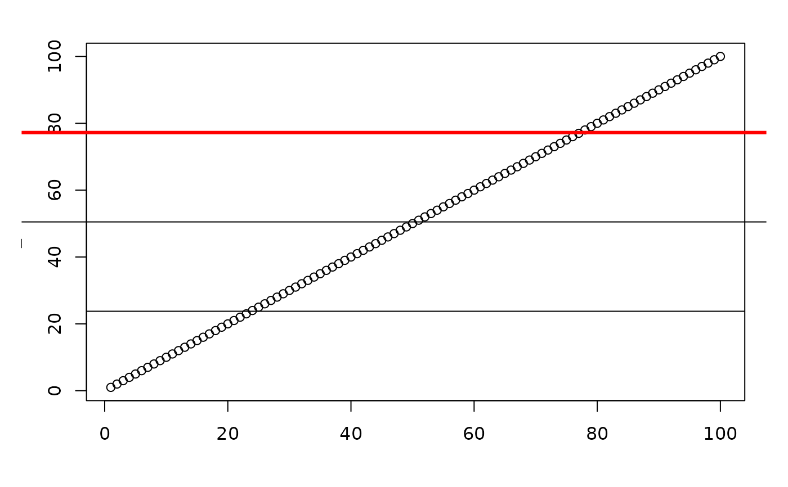

Add a horizontal or vertical line to the current plot
Source
The source code of this function was taken from this stackoverflow question.
Arguments
- at
Numeric; the relative location of where the line should be plotted. Cannot be
NULL.- outer
Logical; if
TRUE, the line is plotted outside of the plotting area. Default isFALSE.- horizontal
Logical; if
TRUE(default), a horizontal line is added. IfFALSE, a vertical line is added.- ...
Additional graphical parameters passed to graphics::abline.
Examples
# Horizontal line
par(oma = c(1, 1, 1, 1), mar = c(3, 3, 1, 1))
plot(seq_len(100))
# add horizontal line
add_line(at = 0.25)
# add horizontal line that extends outside the plot area
add_line(at = 0.5, outer = TRUE)
# the same line but with a different line width and colour
add_line(at = 0.75, outer = TRUE, lwd = 3, col = "red")

# ---------------------------------------------
plot(seq_len(100))
# add vertical line
add_line(horizontal = FALSE, at = 0.25)
# add vertical line that extends outside the plot area
add_line(horizontal = FALSE, at = 0.5, outer = TRUE)
# the same line but with a different line width and colour
add_line(horizontal = FALSE, at = 0.75, outer = TRUE, lwd = 3, col = "red")